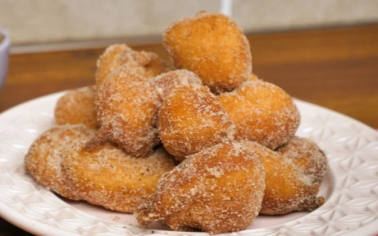

Bolinho De Chuva
Aprenda a fazer um bolinho de chuva muito gosotso!
O bolinho de chuva é uma daquelas receitas repletas de lembranças afetivas e que carregam consigo o aconchego dos momentos em família. Esse clássico da culinária brasileira conquista corações com sua massa fofinha levemente adocicada com uma crosta crocante de açúcar e canela por fora. Os ingredientes básicos da receita de bolinho de chuva, como farinha de trigo, açúcar, leite, ovos, fermento em pó e canela, se misturam para criar uma massa macia e fácil de trabalhar.
Ingredientes:
- Ovos: 2
- Açúcar:
1 xícara (chá)
- Leite:
1 xícara (chá)
- Farinha:
2 e 1/2 xícaras
- Fermento:
1 colher (sopa)
- açúcar para polvilhar:
3 colheres (sopa)
- Canela para polvilhar:
1 colher (sopa)
- Óleo para fritar:
1 litro
Modo de Preparo:
- Misture todos os ingredientes até obter uma massa cremosa e homogênea.
- .Deixe aquecer uma panela com bastante óleo para que os bolinhos possam boiar.
- Quando o óleo estiver bem quente (180º C), com uma colher, comece a colocar pequenas quantidades de massa, e frite até que dourem por inteiro.
- Coloque os bolinhos sobre papel absorvente e depois passe-os no açúcar com canela.

Recipe Details
| Ingredient |
Quantity |
| Lemongrass |
2 stalks |
| Thai Basil |
1 cup |
| Kaffir Lime Leaves |
3 leaves |
| Shrimp |
500g |
| Preparation Time: 20 minutes |
| Serving Suggestions: Serve with steamed rice or jasmine tea. |